This document describes how to set up multi-factor authentication (MFA) for Check Point Gateway with AuthPoint.
You must configure and deploy the Check Point Gateway before you set up MFA with AuthPoint. The Check Point Gateway can be configured to support MFA in several modes. For this integration, we set up RADIUS authentication with AuthPoint.
This integration was tested with Check Point VSX Gateway R81.10.
Contents
Check Point Authentication Data Flow with AuthPoint
AuthPoint communicates with various cloud-based services and service providers with the RADIUS protocol. This diagram shows the data flow of an MFA transaction for a Check Point VSX Gateway.
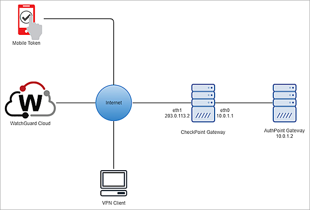
Before You Begin
Before you begin these procedures, make sure that:
- You install and configure the AuthPoint Gateway (see About Gateways).
- You assign a token to a user in AuthPoint.
- You deploy and run the Check Point R81.10 Security Gateway.
- You install the Check Point Endpoint Security Client E86.80 on a Windows machine.
Configure Check Point
Before you configure Check Point Security Gateway, you must complete the Check Point First Time Configuration Wizard on Gaia Portal (Web UI) at: https://<IP address of Gaia Management Interface>. After you configure the Check Point Security Gateway, you can use the Check Point SmartConsole to connect to the Check Point Gateway. For more information, go to the Check Point R81.10 Administration Guide.
To configure Check Point:
- Add a Host Object.
- Add a RADIUS Server Object to Use the Host.
- Add a User Group.
- Configure a Security Gateway for Remote Access.
- Add Users in the Remote Access VPN Community.
- Configure VPN Access Rules for Remote Access.
- Add External User Profile in SmartDashboard.
- Configure RADIUS Group Attributes in Database Tool.
Add a Host Object
To add a host object:
- In SmartConsole, select Objects > New > Host. You can also create a new host object from the Objects option in the top-left menu.
The New Host dialog box opens.
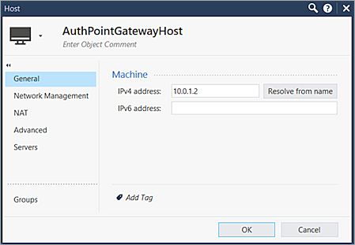
- At the top of the page, type a host object name. In this example, we use AuthPointGatewayHost.
- On the Generalpage, in the IPv4 Address text box, type your RADIUS Server IP Address. In this example, we use 10.0.1.2.
- Keep the default values for all other settings.
- Click OK.
Add a RADIUS Server Object to Use the Host
To add a RADIUS server object to use the host:
- In SmartConsole, select Objects > New > More > Server > RADIUS. You can also create a new RADIUS object from the Objects option in the top-left menu.
The New RADIUS dialog box opens.
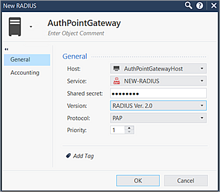
- At the top of the page, type a RADIUS Server name. In this example, we use AuthPointGateway.
- On the General page, from the Host drop-down list, select the host object you created in this section.
- To match the UDP port 1812 in the AuthPoint Gateway settings, from the Service drop-down list, select NEW-RADIUS.
If you keep the default RADIUS value, make sure that UDP port 1645 is configured in the AuthPoint Gateway settings. - In the Shared Secret text box, type the RADIUS secret that matches the shared secret key in the AuthPoint RADIUS resource settings.
- From the Version drop-down list, select RADIUS Ver. 2.0.
- From the Protocol drop-down list, select PAP.
- For Priority, the default value is 1. If you use multiple RADIUS servers, change the value of this parameter as required.
- Click OK.
Add a User Group
To add a user group:
- In SmartConsole, select Objects > New > More > User/Identity > User Group. You can also create a new user group object from the Objects option in the top-left menu.
The New RADIUS dialog box opens.
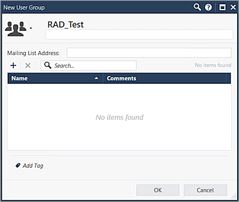
- Type a group name in this format: RAD_<AuthPoint RADIUS user group name>. For example, if the AuthPoint user group is Test, type RAD_Test.
Make sure the group is empty.
- Click OK.
- Select Install Policy > Publish & Install > Install.
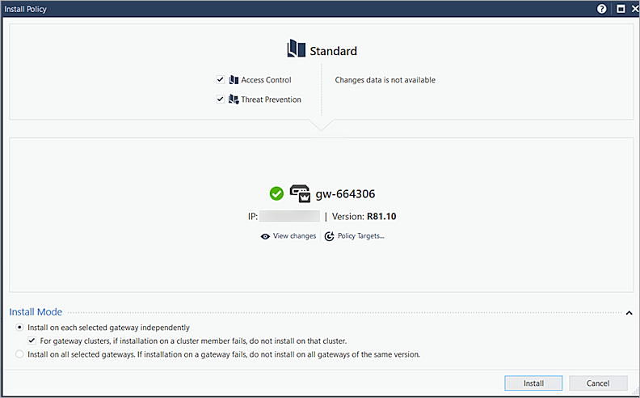
Configure a Security Gateway for Remote Access
To configure a security gateway for remote access:
- In SmartConsole, select Gateway & Servers, then edit your Gateway object.
The Gateway and Servers settings dialog box opens.
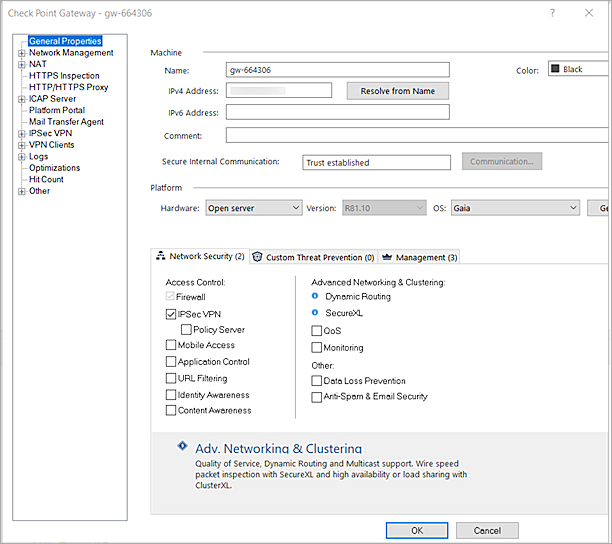
- On the General Propertiespage, select the IPSec VPN check box.
- Select Network Management, then click Get Interfaces With Topology.
The warning dialog box opens.
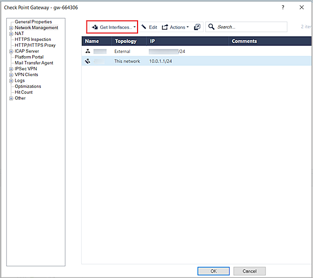
- Click Yes.
- To close the topology results dialog box, click Accept.
- From the navigation pane, select Network Management > VPN Domain.
The VPN Domain page opens.
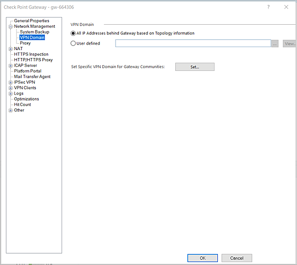
- Select All IP Addresses Behind Gateway Based on Topology Information.
- From the navigation pane, select IPSec VPN > Link Selection.
The Link Selection settings page opens.
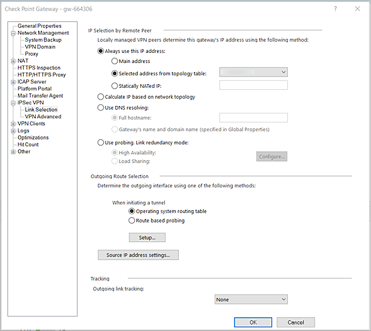
- Select Always Use This IP Address.
- Select Selected Address From Topology Table, then select your Check Point Gateway external IP address.
- Keep the default values for all other settings.
- From the navigation pane, select VPN Clients > Office Mode.
The Office Mode settings page opens.
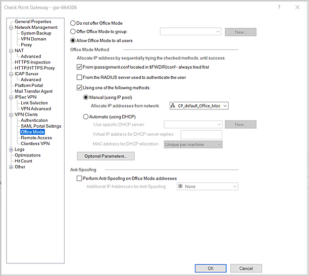
- Select Allow Office Mode to All Users.
- From the Allocate IP Address From Network drop-down list, select CP_default_Office_Mode_address_pool. The default address pool ranges from 172.10.0.1 to 172.10.0.254 with a subnet mask of /24. When a VPN client successfully connects to the Check Point Gateway, the VPN client computer is assigned an IP address within this range.
- Keep the default values for all other settings.
- From the navigation pane, select VPN Clients > Authentication.
The Authentication settings page opens.
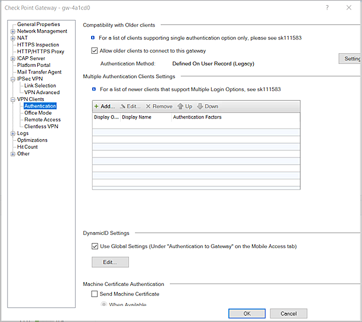
- From the Compatibility With Older Clients section, click Settings.
The Single Authentication Clients Settings dialog box opens.If your VPN clients support multiple login options, you can also add a new login option for your VPN Clients. For more information about multiple authentication clients, go to the Check Point documentation.
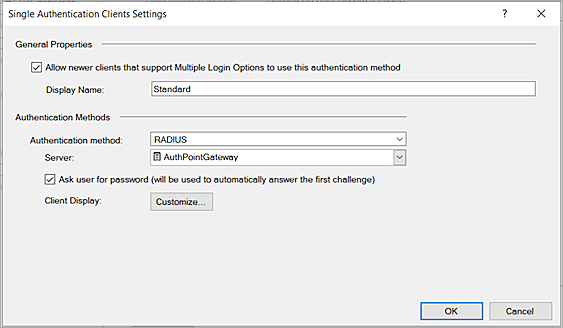
- Select the Allow Newer Clients that Support Multiple Login Options to Use this Authentication Method check box.
- From the Authentication Method drop-down list, select RADIUS, then select the RADIUS server you created (AuthPointGateway) in this section.
- Select the Ask User For Password (Will Be Used to Automatically Answer the First Challenge) check box.
- Click OK.
- Click OK.
- In the upper-left corner, click Install Policy > Publish & Install > Install.
The policy publishes and installs in several minutes. You can view the installation progress in the bottom left corner.
Add Users in the Remote Access VPN Community
To add users in the remote access VPN community:
- In SmartConsole, select Security Policies > Access Control > Policy.
- In the lower-left corner, select Access Tools > VPN Communities.
- Right-click RemoteAccess, then click Edit.
The RemoteAccess page opens.
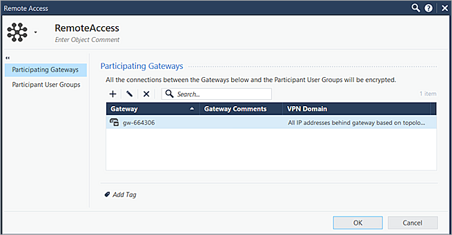
- On the Participating Gateways page, click +, then select your security gateway.
- On the Participating User Groups page, keep the default All Users value.
- Click OK.
- In the upper-left corner, click Install Policy.
Configure VPN Access Rules for Remote Access
To configure VPN access rules for remote access:
- In SmartConsole, select Security Polices > Access Control > Policy.
The Access Control Policy page opens.
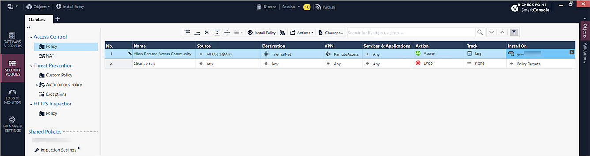
- Click the Add Rule icon .
- Type a rule name for remote access. In this example, we use Allow Remote Access Community.
- Right-click the Source column, and select Add Legacy User Access.
The New Legacy User at Location page opens. - Select All Users for the user group and keep Any as the Location value.
- Click OK.
- Right-click the Destination column, then select Add New Items > InternalNet.
- Right-click the VPN column, then select Specific VPN Communities > RemoteAccess.
- Right-click the Services & Applications column, then select Clear and Switch To 'Any'.
- Right-click the Action column, then select Accept.
- Right-click the Track column, then select Log.
- In the Install On column, click the Add New Item icon , then select your security gateway.
- In the upper-left corner, click Install Policy > Publish & Install > Install.
Add External User Profile in SmartDashboard
To add an external user profile in SmartDashboard:
- In SmartConsole, select Manage & Settings > Blades.
The Application Control & URL Filtering page opens.
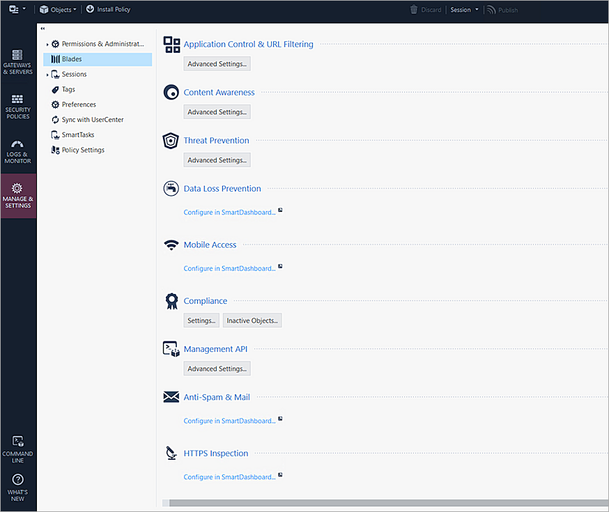
- Click any Configure in SmartDashboard link.
- In SmartDashboard, click the user icon .
The Users options appear.
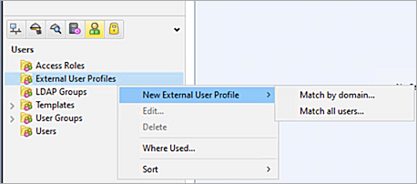
- Right-click External User Profiles, then select New External User Profile > Match All Users.
The External User Profile Properties dialog box opens.
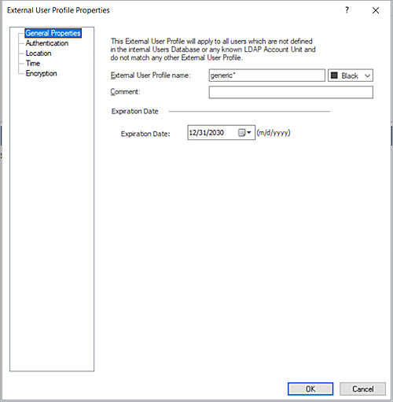
- Select Authentication.
The Authentication properties open.
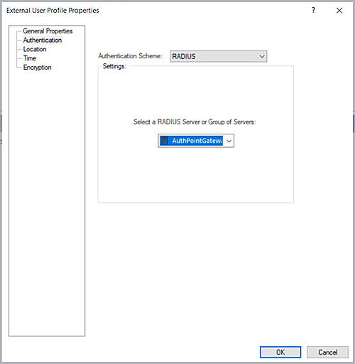
- From the Authentication Scheme drop-down list, select RADIUS.
- Select the RADIUS server you created in the previous section. In this example, we select AuthPointGateway.
- Click OK, then click > File > Update (Ctrl + S).
- Close SmartDashBoard.
- In SmartConsole, in the upper-left corner, click Install Policy > Publish & Install > Install.
Configure RADIUS Group Attributes in Database Tool
GuiDBedit.exe is the Database Tool executable file. You can find this file in the folder where SmartConsole is installed. For more information about the Database Tool, go to Check Point Database Tool (GuiDBedit Tool) in the Check Point Knowledge Base.
To configure RADIUS group attributes in the Database Tool:
- Log in to the Database Tool with your Check Point Gateway administrator credentials.
- From the navigation menu, select Table > Global Properties > Properties > Firewall_Properties.
- Change the value of the add_radius_groups parameter to true.
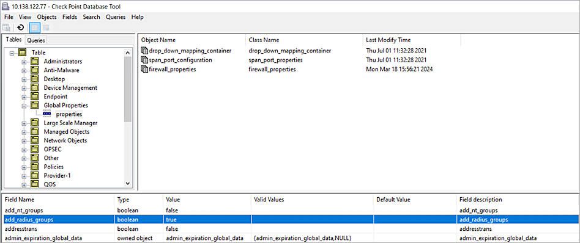
- Change the value of the radius_groups_attr parameter to 11.
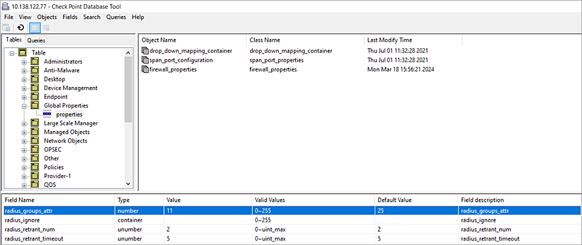
- Save and close the Database Tool.
Configure AuthPoint
Before AuthPoint can receive authentication requests from Check Point, you must specify the Check Point Gateway as a RADIUS client resource in AuthPoint. You must also create an authentication policy for the Check Point resource and you must bind the Check Point resource to the AuthPoint Gateway.
Add a RADIUS Resource in AuthPoint
From the AuthPoint management UI:
- From the navigation menu, select Resources.
Click Add Resource.
The Add Resource page opens.

- From the Type drop-down list, select RADIUS Client.
Additional fields appear.

- In the Name text box, type a descriptive name for the Check Point Gateway resource.
- In the RADIUS Client Trusted IP or FQDN text box, type the IP address your RADIUS client uses to send RADIUS packets to the AuthPoint Gateway. This must be a private IP address. For Check Point, this is usually the internal IP address of your Check Point Gateway.
- From the Value Sent for RADIUS Attribute 11 drop-down list, specify the value sent for attribute 11 (Filter-ID) in RADIUS responses. You can choose to send the AuthPoint group or Active Directory groups of the user.
- In the Shared Secret text box, type the shared secret key. This is the password that the RADIUS server (AuthPoint Gateway) and the RADIUS client (Check Point) use to communicate.
- Click Save.
Add a Group in AuthPoint
You must have at least one user group in AuthPoint to configure MFA. If you already have a group, you do not have to add another group.
To add a WatchGuard Cloud-hosted group to the WatchGuard Cloud Directory:
- Go to Configure > Directories and Domain Services.
- Click the WatchGuard Cloud Directory domain name. If you have not yet added the WatchGuard Cloud Directory, click Add Authentication Domain and select the WatchGuard Cloud Directory.
The New Group page appears.

- In the Groups tab, click Add Group.
- In the Group Name text box, type a descriptive name for the group.
- (Optional) In the Description text box, type a description of the group.

- Click Save.
Your group is added to the WatchGuard Cloud Directory and to AuthPoint.
Add an Authentication Policy to AuthPoint
Authentication policies specify which resources users can authenticate to and which authentication methods they can use (Push, QR code, and OTP).
You must have at least one authentication policy in AuthPoint that includes the Check Point resource. If you already have authentication policies, you do not have to create a new authentication policy. You can add this resource to your existing authentication policies.
Users that do not have an authentication policy for a specific resource cannot authenticate to log in to that resource.
To configure an authentication policy:
- From the navigation menu, select Authentication Policies.
The Authentication Policies page opens.

- Click Add Policy.
The Add Policy page opens.

- In the Name text box, type a name for this policy.
- From the Select the Authentication Options drop-down list, select Authentication Options, then select which authentication options users can choose from when they authenticate.
If you enable the push and OTP authentication methods for a policy, RADIUS client resources associated with that policy use push notifications to authenticate users.
QR code authentication is not supported for RADIUS client resources.
- From the Groups drop-down list, select which groups this policy applies to. You can select more than one group. To configure this policy to apply to all groups, select All Groups.
- From the Resources drop-down list, select the resource that you created in the previous section. If you want this policy to apply to additional resources, select each resource this policy applies to. To configure this policy to apply to all resources, select All Resources.

-
(Optional) If you have configured policy objects such as a Network Location, select which policy objects apply to this policy. When you add a policy object to a policy, the policy only applies to user authentications that match the conditions of the policy objects. For example, if you add a Network Location to a policy, the policy only applies to user authentications that come from that Network Location. Users who only have a policy that includes a Network Location do not get access to the resource when they authenticate outside of that Network Location (because they do not have a policy that applies, not because authentication is denied).
For RADIUS authentication, policies that have a Network Location do not apply because AuthPoint does not have the IP address of the user.
If you configure policy objects, we recommend that you create a second policy for the same groups and resources without the policy objects. The policy with the policy objects should have a higher priority.

- Click Save.
Your policy is created and added to the end of the policy list.When you create a new policy, we recommend that you review the order of your policies. AuthPoint always adds new policies to the end of the policy list.
Bind the RADIUS Resource to a Gateway
To use RADIUS authentication with AuthPoint, you must have the AuthPoint Gateway installed on your corporate network and you must assign your RADIUS resources to the Gateway in the AuthPoint web UI. The Gateway functions as a RADIUS server.
If you have not configured and installed the AuthPoint Gateway, see About Gateways.
To assign your RADIUS resource to the gateway, from the AuthPoint web UI:
- From the navigation menu, select Gateway.
- Select the Name of the Gateway.
-
From the RADIUS section, in the Port text box, type the port number used to communicate with the Gateway. The default ports are 1812 and 1645.
If you already have a RADIUS server installed that uses port 1812 or 1645, you must use a different port for the AuthPoint Gateway.
- From the Select a RADIUS Resource drop-down list, select your RADIUS client resource.
- Click Save.
Add Users to AuthPoint
Before you assign users to a group, you must add the users to AuthPoint. There are two ways to add AuthPoint user accounts:
- Sync users from an external user database
- Add WatchGuard Cloud-hosted AuthPoint users
Each user must be a member of a group. You must add at least one group before you can add users to AuthPoint.
To import users from Active Directory, Microsoft Entra ID, or an LDAP database, you must add an external identity in the AuthPoint management UI. External identities connect to user databases to get user account information and validate passwords.
- To sync users from Active Directory or an LDAP database, you must add an LDAP external identity
- To sync users from Microsoft Entra ID, you must add a Microsoft Entra ID external identity
When you sync users from an external user database, you can sync any number of users and they are all added to AuthPoint at one time. Users synced from an external user database use the password defined for their user account as their AuthPoint password.
To learn how to sync users, go to Sync Users from Active Directory or LDAP and Sync Users from Azure Active Directory.
You create WatchGuard Cloud-hosted users and groups from the WatchGuard Cloud Directory in WatchGuard Cloud. Directories and Domain Services is where you add shared authentication domains for WatchGuard Cloud devices and services, such as AuthPoint.
Users that you add to the WatchGuard Cloud Directory are automatically added to AuthPoint as well.
You add local AuthPoint users form Directories and Domain Services. You manage the users in AuthPoint on the Users page.
When you add WatchGuard Cloud-hosted AuthPoint users, you choose whether the user is an MFA user or a non-MFA user.
- MFA users are user accounts that will use AuthPoint multi-factor authentication to authenticate. This is not related to the AuthPoint Multi-Factor Authentication license type.
- Non-MFA users are users that will only ever authenticate with a password, such as a service account user. Non-MFA users do not consume an AuthPoint user license and cannot authenticate to resources that require MFA. They can only authenticate to protected resources if the non-MFA user account has a password only authentication policy for that resource.
After you add a user, you can edit the user account if you need to change their account type. When you change a user account from MFA to non-MFA, AuthPoint deletes the tokens and password vault (if applicable) that belong to the user. This action cannot be undone.
Unlike users synced from an external user database, WatchGuard Cloud-hosted AuthPoint users define and manage their own AuthPoint password. When you add a WatchGuard Cloud-hosted user account, the user receives an email that prompts them to set their password.
To learn how to add WatchGuard Cloud-hosted AuthPoint user accounts to the WatchGuard Cloud Directory, go to Add Local Users to an Authentication Domain.
Test the Integration
To test the integration of AuthPoint and configuration of your Check Point Gateway, you can authenticate with a mobile token on your mobile device. For RADIUS resources, you can choose one-time password (OTP) or push. In this example, we use the one-time password authentication method.
To test the integration:
- Start the Check Point Endpoint Security client application.
- From the taskbar, right-click the VPN client icon, then select Connect To.
The Authentication page opens.
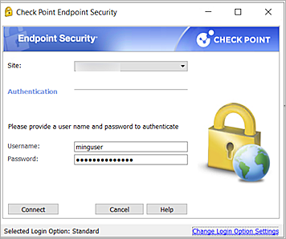
If you see the The site's security certificated is not trusted warning, click Trust and Continue. You always see this warning when you create a new site for the first time.
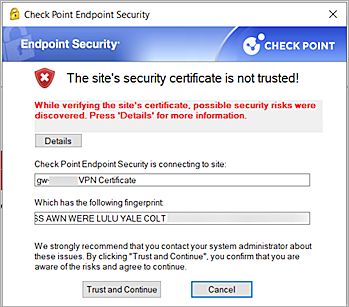
- From the Site drop-down list, select the Check Point Gateway External IP address.
- In the Username text box, type your AuthPoint user name.
- In the Password text box, type your AuthPoint password and your one-time password (OTP) from the AuthPoint mobile app. Do not add a space between your password and your OTP.
- Click Connect.
A virtual interface is assigned to your computer with an IP address on the 172.16.10.0/24 network.
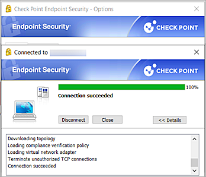